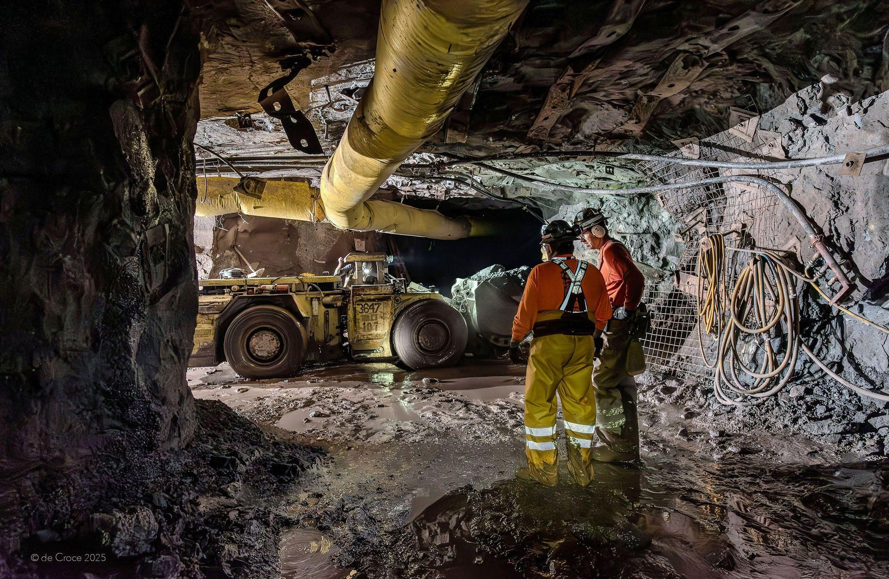
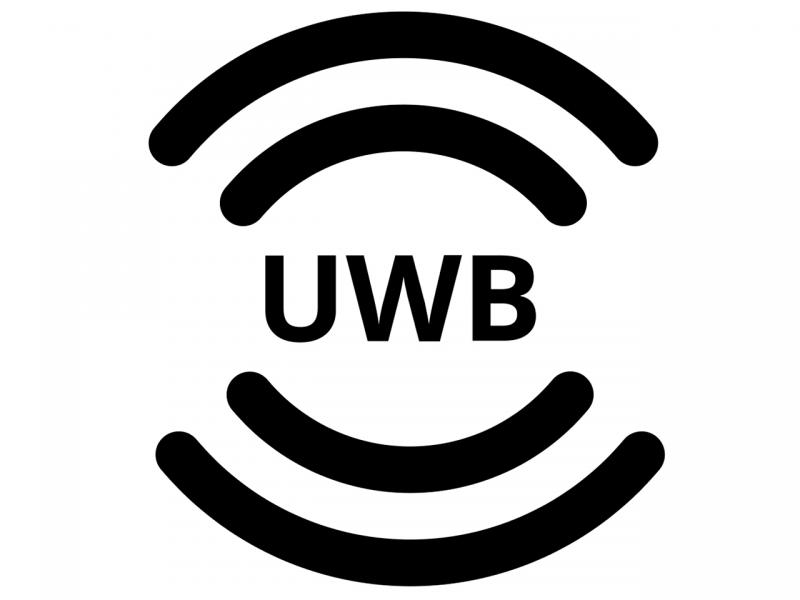
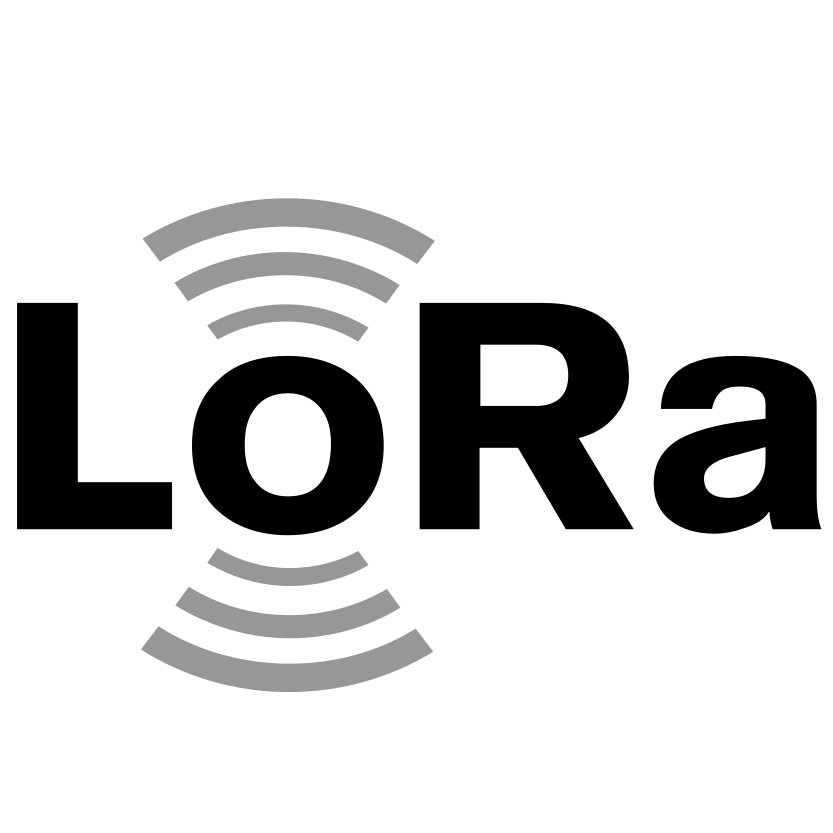
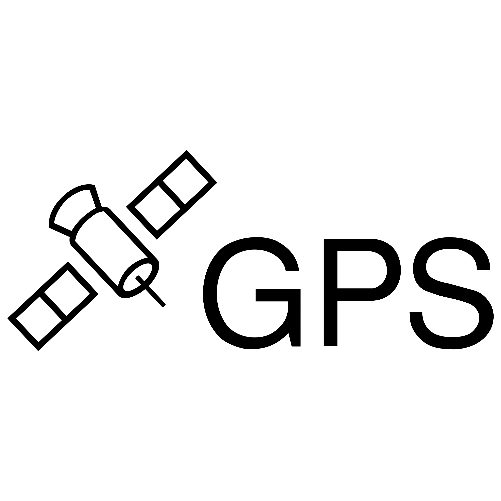
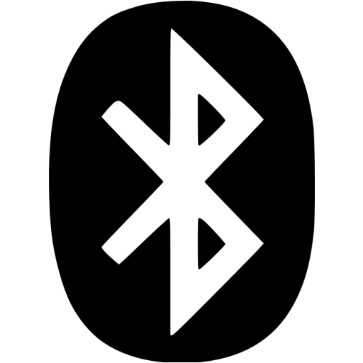

See More, Act Sooner
Understand The Factors
That Create Risk And
Influence Performance
AI-powered systems engineered to continuously understand how evolving operational conditions interact, to predict risk, improve performance and support smarter decisions.
Five Steps Ahead
Atlas see's what you can't, identifies risks
& recommends solutions
Complex operations generate immense amounts of information, but individual systems only explain what is happening within their own area. They cannot determine whether the operation as a whole is performing as intended.
Atlas establishes an operational model based on expected conditions, critical relationships, risk controls, performance requirements and operational objectives. This creates a reference for how the operation should perform safely, efficiently and productively.
As live conditions change, Atlas compares actual performance against the model to detect deviations, understand their wider impact, predict likely consequences and recommend or automate corrective action.
Site Wide Intelligence
Pioneering AI Technology
For Complex Operations
Fatal Risk Intelligence
Predict and prevent critical operational risks before they become incidents.
Production Intelligence
Improve operations by identifying the conditions that limit performance.
Operational Intelligence
Connect operational information, identify relationships and gain the context needed for better decisions.
Changing Operations Forever
Trusted In Environments
Where Visibility Matters Most
Designed for complex operational environments where visibility, coordination and informed decision-making are critical. Supporting owners, contractors, operators and project teams across mining, tunnelling, infrastructure and critical operations internationally.
 Canada
USA
Europe
Africa
Singapore
Australia
New Zealand
Canada
USA
Europe
Africa
Singapore
Australia
New Zealand
- Major tunnel construction projects
- Underground mining operations
- Open-cut mining operations
- Civil infrastructure projects
- Bridge construction and refurbishment
- Airports and transport infrastructure
- Heavy industrial operations
- Major Construction
Breakthrough Solutions
The Shift From
Reactive to Proactive
Modern operations are too complex to be managed by disconnected technologies alone. Operational Intelligence establishes a dynamic operational model that continuously evaluates how an operation is performing, revealing hidden relationships, predicting emerging conditions and enabling proactive decisions that improve safety, productivity and operational performance.
Traditional Operation
- React to Alarms
- Monitor Individual Systems
- Investigate Incidents
- Report What Happened
- Static Procedures
- Manual Decision-Making
- Siloed Technologies
Operational Intelligence
- Predict Developing Conditions
- Understand the Whole Operation
- Prevent Incidents
- Predict What Will Happen
- Dynamic Operational Models
- Assisted Recommendations
- Unified Operational Ecosystem

Operational Understanding Meets Engineering Excellence
By combining engineering, data science, operational technology and field expertise, iottag helps organisations solve complex operational challenges with confidence.
Why iottag arrow_right_altVersatile & Scalable
Delivering Value With Operational Intelligence
Every organisation has different priorities. Whether your focus is improving safety, increasing production, optimising assets or reducing operating costs, iottag transforms operational intelligence into measurable business outcomes across the entire operation.
Safety
- checkFatal Risk Prevention
- checkEmergency Response
- checkAutomated Compliance
Operation
- checkProduction Optimisation
- checkProcess Efficiency
- checkEnergy Optimisation
Assets
- checkPredictive Maintenance
- checkAsset Utilisation
- checkResource Planning
Business
- checkExecutive Intelligence
- checkOperational Assurance
- checkCost Reduction
Vendor Agnostic
Integrates With Your Existing Site Systems.
Atlas supports a wide ecosystem of best-in-class technologies, sensors and OEM solutions, enabling organisations to deploy the right technology for every operational challenge. The Atlas platform facilitates connection with your OEM systems to unlock operational, fatal risk and production intelligence.

Ultra-Wideband
Lorawan
GPS
BLESupports OEM Equipment & Business Systems
Owners Dashboard
Multi-Site Performance Benchmarking
While operational teams use iottag to manage daily activities, leadership teams gain access to portfolio-level dashboards that provide visibility across projects, sites, contractors and operational environments.
Monitor safety performance, operational trends, production outcomes and critical KPIs through a consistent reporting framework that supports governance, benchmarking and strategic decision-making.

Frequently Asked Questions
Most operational systems are designed to report events after they occur. They monitor individual assets, people or environmental conditions and generate alarms when predefined thresholds are exceeded.
Atlas takes a fundamentally different approach. It continuously compares live operational conditions against proprietary operational models that understand how your operation should perform. By analysing trends, patterns and the relationships between systems, Atlas identifies emerging operational deviations, predicts likely outcomes and enables proactive intervention before risks, downtime or production losses occur.
No. Atlas is designed to work with the technology you already have.
The platform integrates with existing tracking, fleet management, environmental monitoring, SCADA, ventilation, communications and enterprise systems, creating a connected Operational Intelligence layer above your current infrastructure.
This allows organisations to maximise previous technology investments while unlocking new insights that individual systems cannot provide on their own.
Serious incidents and operational disruptions rarely result from a single event. They typically develop as multiple conditions change over time.
Atlas continuously monitors these trends across workforce activity, fleet movements, equipment performance, environmental conditions and production systems. Using proprietary risk and operational models, the platform identifies developing patterns, predicts potential outcomes and recommends proactive actions to reduce risk, prevent downtime and maintain operational performance.
Rather than simply responding to alarms, organisations gain the ability to intervene before issues escalate.
Operational Intelligence helps organisations move from reactive operations to proactive decision-making.
By predicting developing risks and operational constraints before they impact the business, Atlas helps organisations:
- Improve workforce safety
- Reduce unplanned downtime
- Increase production throughput
- Optimise asset utilisation
- Improve environmental compliance
- Reduce operating costs
- Strengthen operational planning
- Support faster, more confident decision-making
Atlas uses proprietary operational models developed from engineering expertise, operational knowledge and real-world deployments.
These models continuously analyse trends, patterns and relationships across people, equipment, fleet, environmental conditions and production systems. Rather than reacting to individual alarms, Atlas evaluates how changing conditions interact to identify operational deviations, predict likely outcomes and determine when proactive intervention is required.
This enables organisations to detect developing risks earlier and maintain safer, more efficient operations.
Atlas is built on an open, vendor-agnostic architecture that complements existing operational technologies rather than replacing them.
For operators, this means a single Operational Intelligence platform that improves safety, productivity and decision-making across the entire operation.
For technology partners, it provides the opportunity to integrate their products into a broader operational ecosystem, creating richer customer outcomes and expanding long-term commercial opportunities as Operational Intelligence capabilities grow.
Follow iottag
Latest From Our LinkedIn
Ready To See Atlas In Action?
Book a personalised demonstration and see how Atlas helps organisations model their operations, identify emerging risks and improve operational performance.